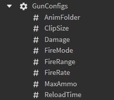

Weapon Systems
Arguably the most popular genre of games are shooter games, so I figured I had to try my hand at creating one of my own. While I by no means created a full-fleshed shooter game with rounds or any objective for that matter, I have created some pretty flushed-out shooter systems that make adding various types of weapons a breeze and designer-friendly.
The Weapon Factory - 2020
 I began the challenge of trying to create a weapon system in the summer of 2020, when I was commissioned by a few people
to script some guns for their games in exchange for Robux, Roblox's virtual currency. This would be my first time attempting
to code guns without a tutorial, and to be honest I felt a bit in over my head. However, I was determined to at least come up with
some sort of functional product, especially since it'd been something I'd wanted to try for a while but just never got around to.
I began the challenge of trying to create a weapon system in the summer of 2020, when I was commissioned by a few people
to script some guns for their games in exchange for Robux, Roblox's virtual currency. This would be my first time attempting
to code guns without a tutorial, and to be honest I felt a bit in over my head. However, I was determined to at least come up with
some sort of functional product, especially since it'd been something I'd wanted to try for a while but just never got around to.
 The first thing I tried to get working was the client input, which I usually look to first when creating these kinds of
systems, since doing so usually helps rule out client-side questions when debugging. To receive input, such as when the player
clicks their mouse, I set up a script that detects when a weapon with a certain tag is equipped/unequipped. When one is equipped,
the script connects the mouse button down event to a function that will signal the server, as well as handle any UI changes
that need to be made and client-side effects. An event is also tied to when the player presses the "R" key and a function that, once
again, signals the server and handles any client-sided calculations that are needed.
The first thing I tried to get working was the client input, which I usually look to first when creating these kinds of
systems, since doing so usually helps rule out client-side questions when debugging. To receive input, such as when the player
clicks their mouse, I set up a script that detects when a weapon with a certain tag is equipped/unequipped. When one is equipped,
the script connects the mouse button down event to a function that will signal the server, as well as handle any UI changes
that need to be made and client-side effects. An event is also tied to when the player presses the "R" key and a function that, once
again, signals the server and handles any client-sided calculations that are needed.
Once I got that working, I moved to the server and created a script that keeps track of all of the guns in the game, mapping them to their respective owners (players). This allowed me to perform all of the essential calculations in a secure way such that exploiters won't be able to, say, give themselves unlimited ammo in a clip, or max out the damage done by their weapon. This is because any changes made to the Gun's configs on the client side aren't replicated to the server or any other clients.
Both the client and the server have access to a Gun class, which is where the bulk of the system's code lies. This class has methods such as Gun:Reload(), which handles reloading the gun, and Gun:Fire(), which (big surprise) handles firing the gun. While the code is varied slightly from client to server, the majority of the code is the same, which allowed me to essentially keep 2 copies of each gun - one on the client, and on the server. This made it fairly straightforward to implement certain functionalities, such as updating the player's GUI and animating the player, that otherwise would've needed special care if I had only kept a copy on the server.
 To make adding new weapons into the game a lot easier, I took advantage of the modular design of the system and created a uniform configuration file that is placed into every weapon. That file is then read by the Gun constructor when creating the Gun object, and the appropriate variables are then set. This makes changing the feel of guns extremely fast and intuitive, making the weapon design process a walk in the park.
I also created all of the animations for the system using Roblox's built in animation editor, which I found very useful for creating quick animations.
Fortunately, this is one of the few select projects that I have open to the public for playing; if you'd like a playthrough, you can find the Roblox experience here.
System Rework - 2022
Fast forward to the Summer of 2022, and I was itching to do more work with shooters. This time around, I actually had an idea for a game, and planned on creating a physics-based shooter where, instead of dealing damage, guns would knock players back into a hazardous environment. Armed with 2 more years of experience in programming, I decided to remake the gun system entirely.
function ServerGun:Fire(mouse_position : Vector3, origin : Vector3?)
if self.can_fire and not self.reloading then
--Taking advantage of short-circuit logic evaluation here :)
if InfiniteMags or useAmmo(self) then
self.can_fire = false
playSoundInGun(self, getGunConfig(self, "FireSound"))
if not origin then
local fire_point_attachment : Attachment? = self.gun_instance:FindFirstChild("FirePoint", true)
if fire_point_attachment then
origin = fire_point_attachment.WorldPosition
else
error("No ray origin for ServerGun:Fire()")
end
end
if origin then
local direction : Vector3 = mouse_position - origin
if direction.Magnitude > 1 then
direction = direction.Unit
end
local max_range = getGunConfig(self, "MaxRange")
local fire_raycast_result : RaycastResult = workspace:Raycast(origin, direction * max_range, self.raycast_params)
if fire_raycast_result then
defaultOnHitFunction(self, fire_raycast_result)
end
end
task.delay(60/getGunConfig(self, "FireRate"), function() --fire_rate is in RPM, divide 60 by it to get delay
self.can_fire = true
end)
else
self:Reload()
end
end
endThe overall concept of the system is more or less the same as the previous, where the client is used for input and user feedback, while the server handles the main system logic. However, the code for this system is much cleaner. The new system was designed in a much more modular way, taking advantage of multiple classes and scripts to handle individual tasks, rather than cramming all of the client-sided stuff in one script and all of the server-sided work in another. Another addition to my coding was the use of Roblox's fancy new type checking that wasn't around when I made the first system. This allowed me to keep track of what types various objects were, improving my workflow and helping me write better code.
In addition to the weapon system, I also coded a physics-based projectile weapon utilizing the FastCast Module developed by Xan_TheDragon. This allowed me to create a gun that, instead of having instant damage at the click of a mouse, had projectiles with travel time, meaning that players would have to lead their targets if they hoped to hit their mark. I integrated this module with my own code to handle the physics, and I'm very happy with the end result.

My idea for the physics-based shooter involved a very fast-paced feel, and as such, needed a solid movement system to give the player a sense of controlled speed. My vision for this movement took heavy inspiration from the movement of Warframe, a third-person shooter with fast-paced combat. My system features many of the same capabilities as Warframe's - sliding (midair and grounded), crouching, sprinting, and double jumping.
In addition, I attempted to create a camera system that mocks Warframe's, which faces the player in the direction of their camera while holding the right mouse button, but allows their character to rotate independently of the camera when just looking around.
What I Learned
Both systems utilize common game development tools and techniques, such as raycasting, object oriented programming, and communication between the client(s) and the server. These projects also gave me some of my first experiences in a modular style of programming, as well as animating and trying to create (minimal) visual effects. In addition, I learned how to incorporate code that someone else has written, such as the FastCast module, with my own, allowing me to create functionality that would've otherwise been less efficient, or much more time demanding to make. Learning about type checking was also a skill that I appreciate very much, as it came in handy during one of my classes, where my professor was using type checking in her Python code.